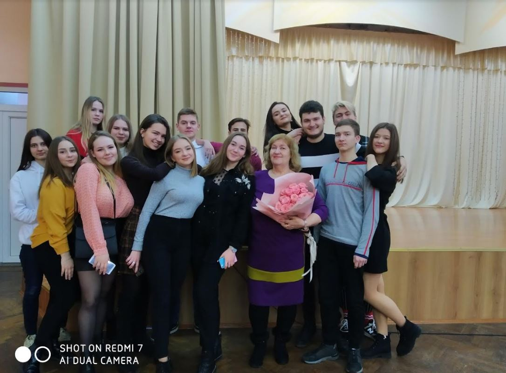
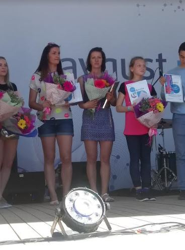

«Фотогалерея»
01.02.2020 - Акция «29 добрых дел»
01.02.2020 года в рамках акции «29 добрых дел» прошёл вечер встречи с выпускниками. В школе состоялся концерт, экскурсия по учебному заведению.
01.02.2020 - Акция «29 добрых дел»
А этот забег - уже добрая традиция. "Гродненская вандровка" собирает любителей бега со всех уголков родной Беларуси. 27 мая здесь собралось 255 бегунов. Пиньковская Ирина Владимировна на трассе в 10 км заняла 164 место ( из 255 участников). А в своей категории - "Женщины 30-39 лет" из 25 пришла 8-ой! Ну а 26-ого мая в этнографической усадьбе "Дукорский маентак" состоялось награждение победителей благотворительного забега в честь 10-летия химического завода "Август-Бел", на котором Ирина Владимировна получила свою заслуженную награду за 1-ое место. А ещё все замечательно отдохнули и получили массу положительных эмоций и заряд энергии на недели вперёд.
19.05.2018 - Досуг, здоровый образ жизни
19 -ого мая химический завод "Август-Бел", организовал забег в честь 10-летнего юбилея этого завода в поселке Дружный Пуховичского района. На трассе 3 км в группе "Женщины 16+" Ирина Владимировна была первая!!!
09.05.2018 - Досуг, здоровый образ жизни
Мы часто говорим о здоровом образе жизни. Настолько часто, что забываем перейти от слов к делу. А вот некоторые наши родители
действительно знают, что такое ЗОЖ не по наслышке. Ирина Владимировна Пиньковская - страстный поклонник бега. Она частый участник
самых разных забегов: от стайерских до марафонских. К бегу она старается приобщить и своих сыновей: старшего Евгения и младшего
Артема. Ведь забеги, в которых они принимают участие не просто спорт, а настоящий праздник, где собираются не только посоревноваться,
но и увлекательно отдохнуть со своими друзьями и единомышленниками.
"Забег отважных" состоялся 9-ого мая в Парке Победы. Трасса была не простая, с препятствиями. Но мальчишки прошли её с честью.
Результаты: Женя на дистанции в 900 м занял 19-ое место, а Артем на дистанции 400 м -8-ое место. Знай наших!